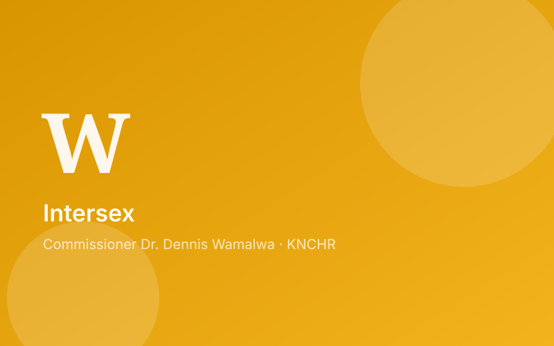

Advancing Healthcare for Intersex Persons: Exploring a Potential Partnership Between KNCHR and KEMRI

Introduction
Commissioner Dr. Wamalwa Dennis recently engaged in a fruitful meeting with Mrs. Eva Aluvaala, a distinguished scientist from the Kenya Medical Research Institute (KEMRI), at Bishop Okullu CVs Plaza in Nairobi. The focal point of this meeting was the exploration of a potential partnership between the Kenya National Commission on Human Rights (KNCHR) and KEMRI, with the aim of strengthening healthcare services for intersex persons.
Meeting Highlights
- Recognizing the Critical Need
During the meeting, both Commissioner Dr. Wamalwa Dennis and Mrs. Aluvaala acknowledged the critical need for improved diagnostic capabilities and access to specialized medical equipment for the accurate diagnosis and treatment of intersex conditions. The discussion highlighted the gaps in the current healthcare services for intersex individuals in Kenya.
- Commissioner's Vision for Partnership
Commissioner Dr. Wamalwa Dennis expressed a keen interest in leveraging the potential partnership to address these gaps effectively. He emphasized the significance of collaboration between government institutions, as represented by KNCHR, and research organizations like KEMRI. The goal is to ensure that intersex persons receive comprehensive and specialized care, aligning with their unique healthcare needs.
- Exploring Partnership Specifics
In response to the identified needs, Commissioner Dr. Wamalwa Dennis and Mrs. Aluvaala agreed to further explore the specifics of the partnership. This includes logistical arrangements for hosting Cytogenetic equipment at KEMRI facilities and developing a comprehensive plan for service delivery to intersex individuals across the country. The collaboration aims to optimize existing resources and expertise for the betterment of healthcare provision.
Conclusion
The potential partnership between KNCHR and KEMRI signifies a significant step forward in advancing the healthcare rights and well-being of intersex persons in Kenya. It reflects the commitment of both parties to collaborative efforts aimed at improving access to quality healthcare services and promoting inclusivity for all members of society.
This strategic collaboration holds the promise of addressing the specific healthcare needs of intersex individuals through a combined effort of government institutions and research organizations. By pooling resources, knowledge, and expertise, KNCHR and KEMRI aspire to contribute to a healthcare system that truly caters to the diverse needs of the population, fostering a more inclusive and compassionate society.